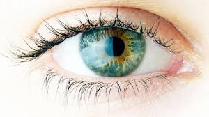

कॉर्निया

कॉर्निया आँख का वह पारदर्शी हिस्सा है, जिस पर बाहर का प्रकाश पड़ता है। यह आँख का दो तिहाई भाग है, जिसमें बाहरी आँख का रंगीन हिस्सा, पुतली और लेंस का प्रकाश देने वाला हिस्सा शामिल होता है। कॉर्निया में कोई रक्त वाहिका नहीं होती, बल्कि इसमें तंत्रिकाओं का एक जाल होता है। इसको पोषण देने वाले द्रव्य वही होते हैं, जो आंसू और आँख के अन्य पारदर्शी द्रव का निर्माण करते हैं।
bकार्य
आमतौर पर कॉर्निया की तुलना लेंस से की जाती है, लेकिन इनमें काफ़ी अंतर होता है। एक लेंस केवल प्रकाश को अपने पर गिरने के बाद फैलाने या सिकोड़ने का काम करता है, जबकि कॉर्निया का कार्य इससे व्यापक है। कॉर्निया वास्तव में प्रकाश को आँख की पुतली (नेत्र गोलक) में आने देता है। इसका उभरा हुआ (उत्तल) हिस्सा इस प्रकाश को आगे यानी पुतली और लेंस में भेजता है। इस तरह यह विजन का काम करता है। कॉर्निया का गुंबदाकार ही यह तय करता है कि किसी व्यक्ति की आँख में दूरदृष्टि दोष है या निकट दृष्टि दोष। देखने के दौरान बाहरी लेंसों का प्रयोग बिंब को आँख के लेंस पर फोकस करना होता है। इससे कॉर्निया मॉडीफाइड हो सकता है। ऐसे में कॉर्निया के पास स्थित कांटेक्ट लेंस इसकी मोटाई को बढ़ाकर एक नया केंद्र बिंदु बना देता है।
कॉर्निया कैमरे की लैंस की तरह होता है, जिससे प्रकाश अंदर जाकर रेटीना पर पड़ता है इसके बाद चित्र बनता है, जिसे दृष्टि-धमनी विद्युत संकेत रूप में मस्तिष्क के उपयुक्त भाग तक पहुंचा देती है। कॉर्निया खराब होने पर रेटीना पर चित्र नहीं बनता और व्यक्ति अंधा हो जाता है। कई बार आंखों में संक्रमण, चोट या विटामिन ए की कमी के कारण भी कॉर्निया खराब हो जाते हैं। कॉर्निया में दोष आने पर उसका उपचार शल्य-क्रिया द्वारा किया जाता है। ये ऑपरेशन सरलता से हो जाता है। इसमें शल्य-चिकित्सक कॉर्निया से जुड़ी तंत्रिकाओं को अचेतन कर बिना रक्त बहाए इस क्रिया को पूर्ण कर देते हैं। कभी-कभी ऑपरेशन के दौरान कॉर्निया पर किसी बाहरी वस्तु से खरोंच भी लग जाती है या फिर पलक का ही कोई बाल टूटकर इस पर खरोंच बना देता है। इस स्थिति में कुछ आंख की तरल दवाइयों से कॉर्निया कुछ ही दिनों में ठीक हो जाता है।
दान
बहुत से लोग अपना कॉर्निया दान कर देते हैं ताकि कोई उनकी आंखों से यह दुनिया देख सके। इस कॉर्निया दान को ही असल में नेत्र दान कहा जाता है। नेत्रदान करने वाले व्यक्ति की मृत्यु के बाद उसके कॉर्निया को निकालकर मशीन (एमके मीडियम) की सहायता से उसकी कोशिका घनत्व देखी जाती है। एक वर्ग मिलीमीटर के क्षेत्र में तीन हज़ार से अधिक कोशिकाएं होना अच्छे कॉर्निया की पहचान है।